Optimización de procesos mediante análisis de datos históricos
Evaluación de variables de proceso para identificar patrones y oportunidades de mejora.
Contexto
La industria aceitera forma parte del sector agroindustrial y cumple un rol estratégico dentro de la cadena de producción de alimentos, abasteciendo aceites vegetales para el consumo masivo. Dentro del proceso productivo, la etapa de refinación es fundamental para garantizar que el aceite crudo alcance los estándares de calidad exigidos por el mercado.
El proceso de refinería implica distintas operaciones físicas y químicas, tales como neutralizado, blanqueo y desodorizado, en las cuales intervienen diversos insumos y servicios. La eficiencia de este proceso no solo impacta en la calidad final del producto, sino también en los costos de producción.
La calidad del aceite crudo puede presentar variaciones en parámetros fisicoquímicos, lo que influye directamente en el comportamiento del proceso de refinación y en el consumo de insumos necesarios para alcanzar la calidad requerida en el producto final. En este contexto, el análisis de datos históricos del proceso permite identificar patrones, relaciones y oportunidades de mejora en términos de eficiencia operativa y optimización de recursos.
Objetivo
Realizar un análisis exploratorio y descriptivo de los datos del proceso de refinería de una planta aceitera, con el fin de visualizar la eficiencia productiva del proceso e identificar cómo las variaciones en la calidad de la materia prima y del producto refinado se relacionan entre si y con el consumo de insumos operativos.
Herramientas
Presentación
- • Limpieza y preparación de datos
- • Análisis exploratorio (EDA)
- • Análisis de tendencias en variables operativas
- • Evaluación de relaciones entre variables de proceso
- • Generación de visualizaciones
- • Generación de información para la mejora continua
- • Soporte a decisiones operativas basadas en datos
Cómo evolucionó este análisis
El proyecto nació como cierre de un curso de análisis de datos, con una muestra de apenas 12 lotes y un dashboard en Power BI como entregable principal. Dentro de ese análisis exploratorio, surgió un hallazgo llamativo: la acidez del crudo, una medición simple y rápida de obtener, mostraba una correlación relativamente fuerte con el color del aceite refinado. Con tan pocos datos, decidí no publicar esa conclusión como definitiva y, en cambio, priorizar la ampliación de la muestra antes de sacar conclusiones.
Con más de 80 lotes recopilados, la primera sorpresa fue que la correlación de acidez, que parecía tan prometedora, se diluía notablemente. En vez de descartar el hallazgo sin más, la pregunta pasó a ser por qué cambiaba tanto al ampliar la muestra. La respuesta apareció al graficar los datos en el tiempo: el dataset combinaba dos períodos muy distintos. Uno de operación normal, y otro correspondiente a la campaña 2022/23, marcada por una sequía histórica en Argentina que generó grano verde con niveles de clorofila muy por encima de lo habitual. Analizar ambos períodos juntos, sin distinguirlos, distorsionaba la relación real dentro de cada uno.
Separar el análisis por campaña fue el punto de inflexión del proyecto. Validado ese criterio con varios chequeos (residuos del modelo en el tiempo, outliers concentrados en el período atípico, descarte de desfases temporales entre materia prima y producto terminado), el análisis avanzó de correlaciones simples a regresión multivariable (evaluando el efecto conjunto de todas las variables de calidad de crudo disponibles, en lugar de una a la vez). Ahí la clorofila del crudo se consolidó como el predictor más sólido y consistente del color final, mientras que la acidez original, la que había motivado todo el proyecto, no logró sostenerse como una variable confiable.
El análisis se extendió luego a un segundo proceso de refinación, el físico, replicando la misma metodología. Aquí encontré una diferencia interesante entre procesos: mientras que en el proceso químico la acidez del crudo resultó prácticamente irrelevante, en el proceso físico se mantuvo significativa en los tres escenarios evaluados; un hallazgo que, con base en el conocimiento del proceso, podría explicarse por cómo cada tipo de refinación resuelve la eliminación de ácidos grasos en etapas distintas.
El resultado de todo este recorrido no es un modelo predictivo terminado, sino un diagnóstico riguroso: qué variables de crudo importan, en qué medida, bajo qué condiciones, y qué falta todavía (principalmente, variables de proceso) para dar el siguiente paso hacia un modelo confiable. El detalle completo de cada etapa de este análisis está disponible en las pestañas a continuación.
Resultado de la aplicación del proyecto
Aplicación práctica: un análisis inicial sobre 12 lotes había sugerido que la acidez del crudo, una variable simple y rápida de medir, podría predecir la calidad del aceite refinado. Al ampliar la muestra a más de 80 lotes y aplicar regresión multivariable, esa relación no se sostuvo. En cambio, la clorofila del crudo mostró una relación consistente y significativa con el color del producto final, aunque su fuerza depende fuertemente de las condiciones de la cosecha: durante la campaña 2022/23, afectada por sequía y grano verde, esa relación se debilitó, lo que llevó a segmentar el análisis en dos períodos distintos.
Incluso en el mejor escenario, la calidad de la materia prima explica cerca de la mitad de la variabilidad del color final; el resto depende de variables de proceso (temperatura, vacío, tierra de blanqueo, entre otras) que no forman parte de esta base de datos ampliada. Avanzar hacia un modelo predictivo requiere incorporar todas esas variables y ampliar significativamente el volumen de lotes.
Correlaciones analizadas
Conclusión: se observó una fuerte correlación entre color amarillo y color rojo, consistente con la calidad de la materia prima. La dosificación de tierra mostró relación positiva con el color final, aunque como respuesta operativa a lotes más difíciles de procesar, no como causa directa.
⚠️ No se observó correlación clara entre tierra y clorofila: la temperatura, variable clave en este proceso, no estaba disponible en la base de datos.

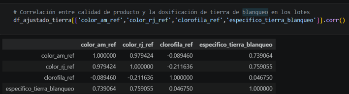

Conclusión: el análisis inicial sobre 12 lotes había mostrado una correlación relativamente fuerte entre la acidez del crudo y el color del aceite refinado (0.67 / 0.62). Al ampliar la muestra a más de 80 lotes, esa relación se diluyó considerablemente. Un análisis más detallado reveló ademas que el nuevo dataset combinaba dos períodos de cosecha muy distintos: uno normal y otro afectado por la sequía histórica de la campaña 2022/23, que generó grano verde con clorofila muy por encima de lo habitual. Esa mezcla distorsionaba la relación real dentro de cada período.
⚠️ Al segmentar el análisis por período, la acidez del crudo no se sostuvo como predictor sólido del color final en ninguno de los dos escenarios. La variable que sí mostró una relación consistente fue la clorofila del crudo, cuyo análisis detallado, incluyendo el efecto de esta segmentación, se desarrolla en el panel de análisis multivariable (VER PESTAÑA DE REGRESIÓN MULTIVARIABLE)
Imágenes primera etapa Proyecto
Tablas y gráficos correspondiente a las correlaciones realizadas con una base de datos de 12 lotes de producción
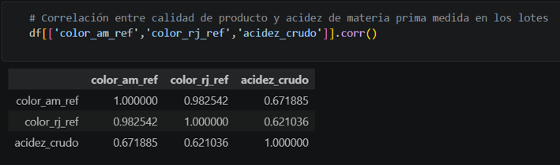


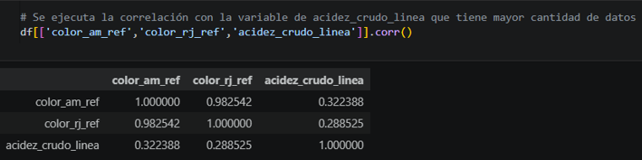


Imágenes segunda etapa Proyecto
Tablas y gráficos correspondiente a las correlaciones realizadas con una base de datos de 80 lotes de producción
Conclusión: se observó correlación positiva moderada (0.57) entre la acidez del crudo medida en línea y el consumo específico de soda cáustica (kg soda/ton crudo procesado): a mayor acidez, mayor consumo. Esto es coherente con la lógica operativa, ya que la dosificación se define en función de esa medición.
⚠️ La dispersión observada indica que la acidez explica solo parcialmente la dosificación. Otras variables probablemente influyen: márgenes de exceso por criterio operativo, ajustes por seguridad/estabilidad del proceso, variaciones operativas, y posible desalineación temporal entre la medición y la dosificación real.


Conclusión: el análisis de correlaciones individuales resultó insuficiente para explicar el color del aceite refinado. Al aplicar regresión multivariable, es decir, evaluando el efecto conjunto de todas las variables de calidad del crudo, la clorofila se confirmó como el predictor más sólido y consistente, alcanzando un R² ajustado de 0.50 en condiciones normales de cosecha. Sin embargo, el dataset combinado ocultaba un problema estructural: mezclaba dos campañas con condiciones muy distintas.
⚠️ Durante la campaña 2022/23, la sequía histórica en Argentina generó una alta proporción de grano verde con clorofila muy por encima de lo habitual. Analizar el dataset sin distinguir este contexto generaba una relación distorsionada: el coeficiente combinado no representaba con precisión la relación real dentro de cada campaña. Separar el análisis en dos períodos (normal y atípico) fue necesario para obtener conclusiones confiables.
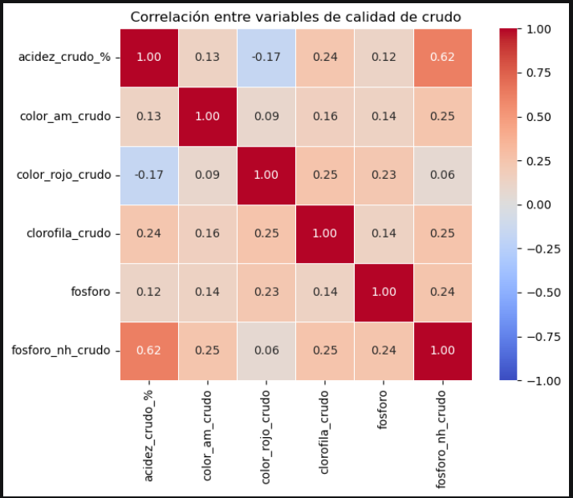
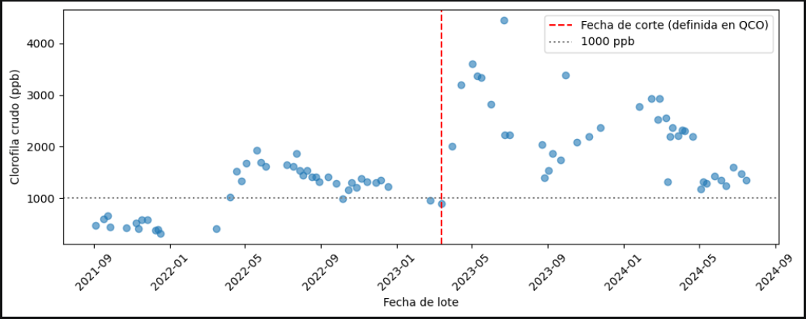
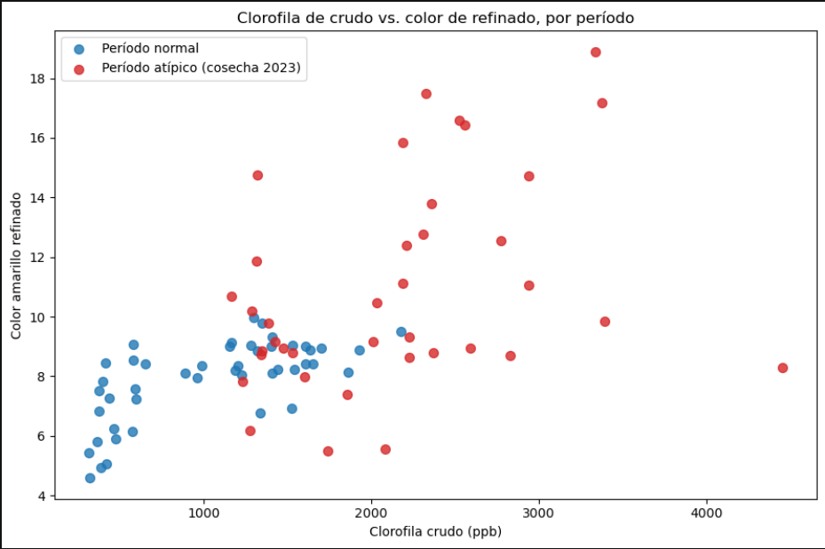
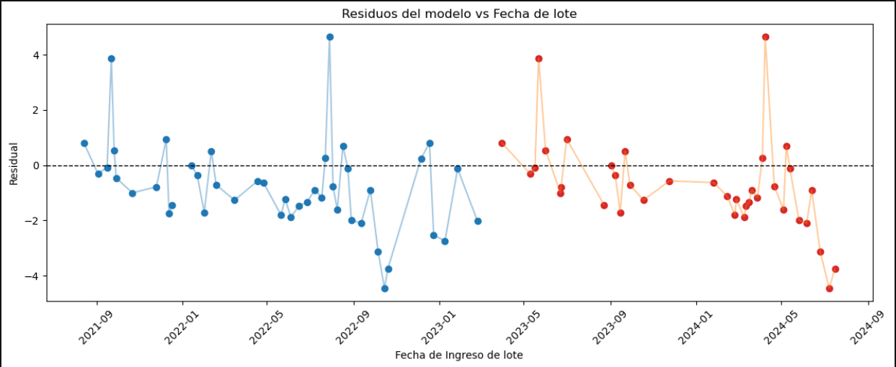
Validez de los modelos multivariables
| Proceso | Etapa | Lotes | R² ajustado | Prob (F) | Modelo válido |
|---|---|---|---|---|---|
| Químico | Combinado | 84 | 0.388 | 0.000 | Sí |
| Químico | Normal | 46 | 0.503 | 0.000 | Sí |
| Químico | Atípico | 38 | 0.374 | 0.002 | Sí |
| Físico | Combinado | 79 | 0.328 | 0.000 | Sí |
| Físico | Normal | 41 | 0.169 | 0.052 | No |
| Físico | Atípico | 38 | 0.115 | 0.132 | No |
P-valores por variable (multivariable)
| Variable | Qco. Combinado | Qco. Normal | Qco. Atípico | Fco. Combinado | Fco. Normal | Fco. Atípico |
|---|---|---|---|---|---|---|
| Acidez crudo | 0.087 | 0.012 | 0.154 | 0.004 | 0.037 | 0.040 |
| Clorofila crudo | 0.000 | 0.000 | 0.763 | 0.000 | 0.612 | 0.972 |
| Color amarillo crudo | 0.421 | 0.168 | 0.947 | 0.506 | 0.850 | 0.513 |
| Color rojo crudo | 0.266 | 0.449 | 0.507 | 0.288 | 0.272 | 0.477 |
| Fósforo | 0.188 | 0.157 | 0.005 | 0.908 | 0.011 | 0.144 |
| Fósforo no hidratable | 0.033 | 0.461 | 0.000 | 0.669 | 0.607 | 0.044 |
Valores en amarillo indican significancia estadística (p < 0.05).
Conclusión: Hasta aquí todas las correlaciones se desarrollaron sobre un dataset con datos de proceso químico, es decir donde la acidez libre del aceite fue tratada con químicos para su eliminación. Al replicar el análisis multivariable sobre el proceso físico de refinación, la clorofila se mantuvo como la variable con mayor peso relativo, coherente con el proceso químico. Sin embargo, apareció una diferencia notable: la acidez del crudo mostró una relación estadísticamente significativa con el color final en los tres escenarios evaluados para el proceso físico (combinado, normal y atípico), algo que no ocurrió de forma consistente en el proceso químico.
⚠️ Los modelos multivariables del proceso físico, al segmentar por campaña, no alcanzaron significancia estadística global (R² ajustado de 0.17 y 0.11 respectivamente) — probablemente por tamaño de muestra insuficiente dentro de cada segmento. La relación de la acidez con el color, aunque consistente, debe tomarse como un hallazgo preliminar, pendiente de confirmar con más lotes.
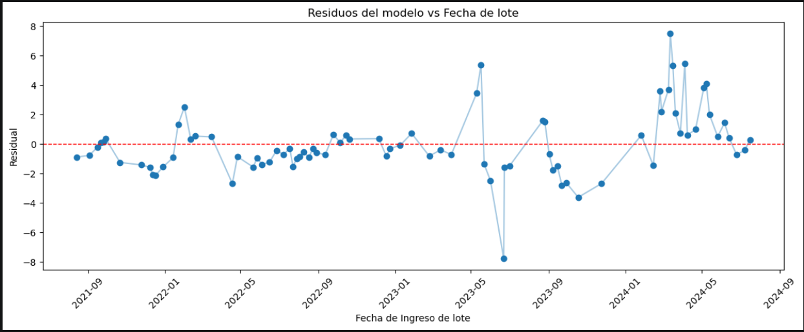
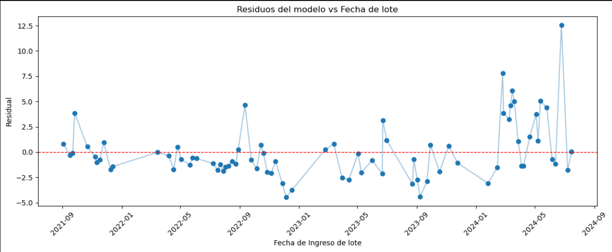
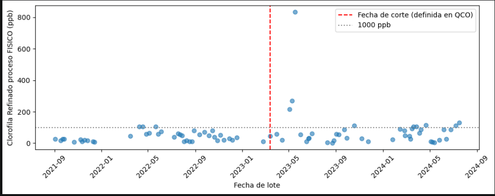
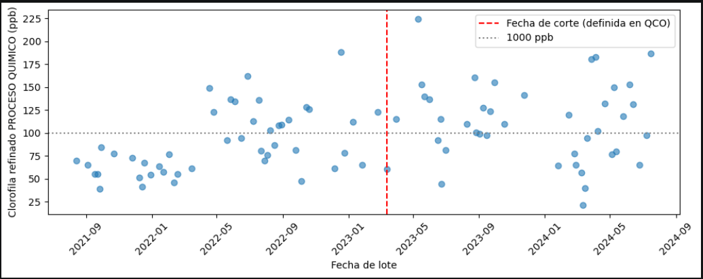
Validez de los modelos multivariables
| Proceso | Etapa | Lotes | R² ajustado | Prob (F) | Modelo válido |
|---|---|---|---|---|---|
| Químico | Combinado | 84 | 0.388 | 0.000 | Sí |
| Químico | Normal | 46 | 0.503 | 0.000 | Sí |
| Químico | Atípico | 38 | 0.374 | 0.002 | Sí |
| Físico | Combinado | 79 | 0.328 | 0.000 | Sí |
| Físico | Normal | 41 | 0.169 | 0.052 | No |
| Físico | Atípico | 38 | 0.115 | 0.132 | No |
P-valores por variable (multivariable)
| Variable | Qco. Combinado | Qco. Normal | Qco. Atípico | Fco. Combinado | Fco. Normal | Fco. Atípico |
|---|---|---|---|---|---|---|
| Acidez crudo | 0.087 | 0.012 | 0.154 | 0.004 | 0.037 | 0.040 |
| Clorofila crudo | 0.000 | 0.000 | 0.763 | 0.000 | 0.612 | 0.972 |
| Color amarillo crudo | 0.421 | 0.168 | 0.947 | 0.506 | 0.850 | 0.513 |
| Color rojo crudo | 0.266 | 0.449 | 0.507 | 0.288 | 0.272 | 0.477 |
| Fósforo | 0.188 | 0.157 | 0.005 | 0.908 | 0.011 | 0.144 |
| Fósforo no hidratable | 0.033 | 0.461 | 0.000 | 0.669 | 0.607 | 0.044 |
Valores en amarillo indican significancia estadística (p < 0.05).